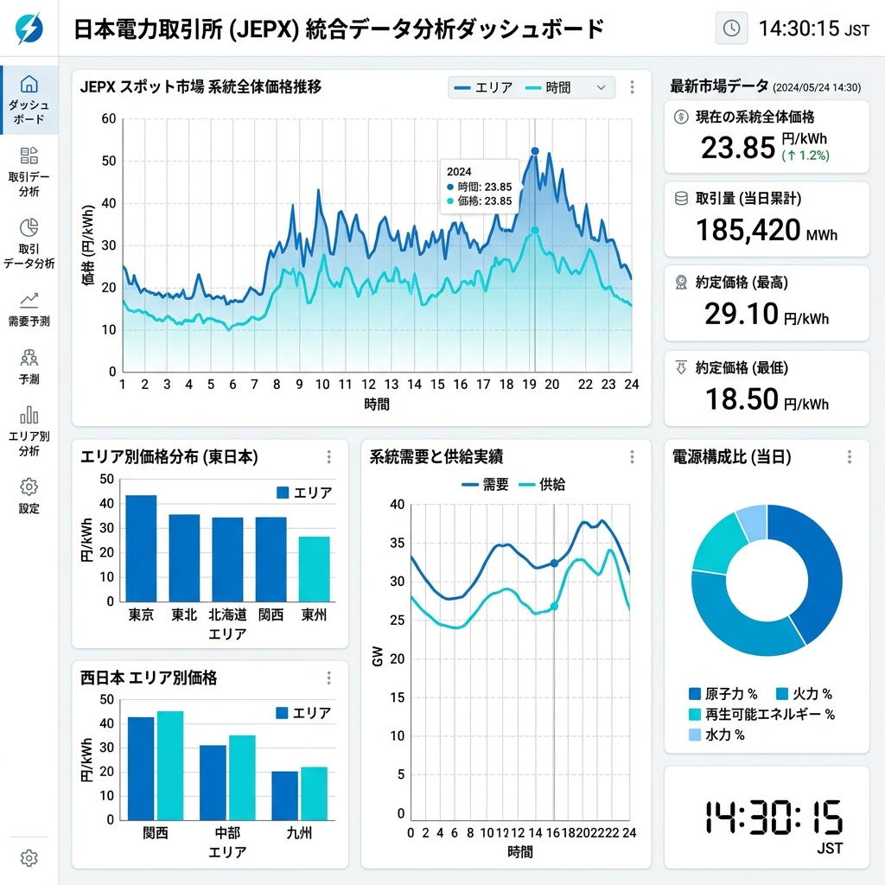
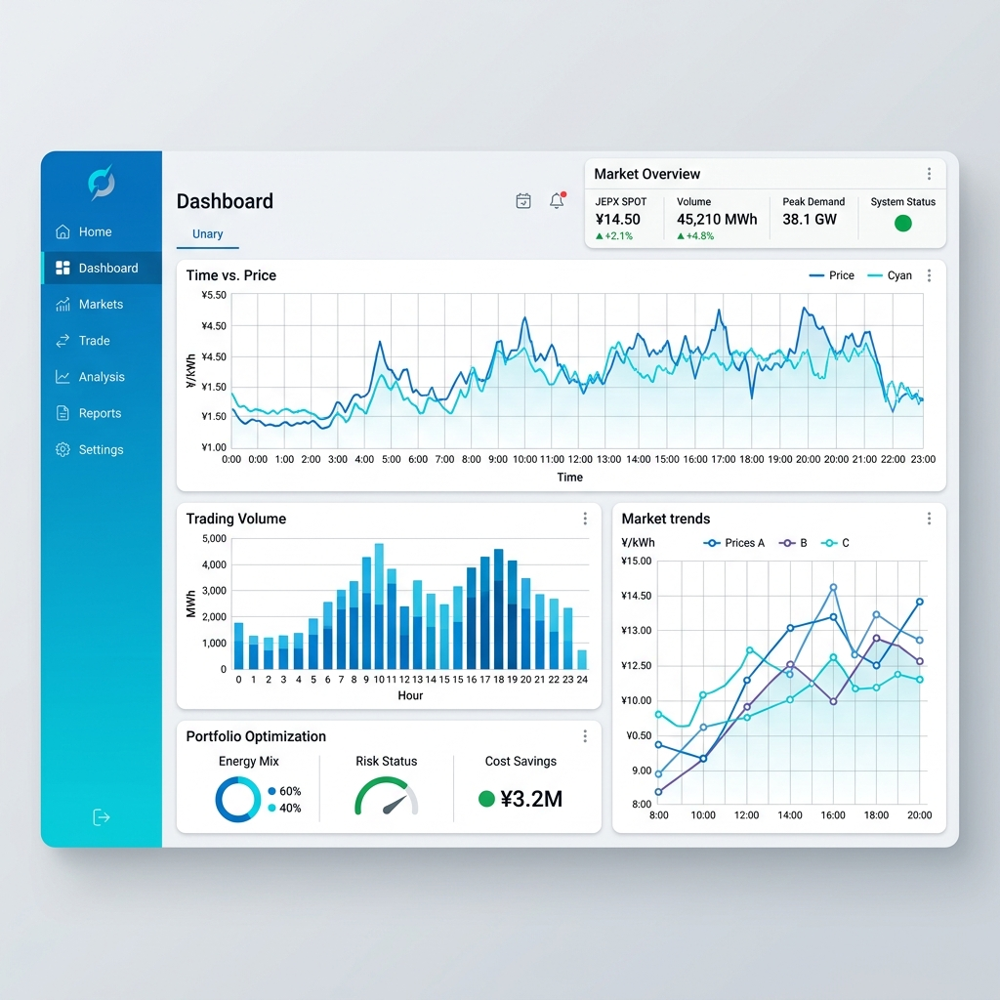

エネルギーの仲介：革新的な調達プラットフォーム Energy Mediation: An Innovative Procurement Platform
スマートリンクシステム（SLS）は、エネルギー調達を簡素化し最適化するために設計された、当社の革新的かつ特注のソフトウェアプラットフォームです。日本の電力取引所（JEPX）との直接API統合を活用することで、SLSはリアルタイムの価格と契約データへのシームレスなアクセスを提供します。 The Smart Link System (SLS) is our innovative, proprietary software platform designed to simplify and optimize energy procurement. Leveraging direct API integration with the Japan Electric Power Exchange (JEPX), SLS provides seamless access to real-time pricing and contract data.
この技術により、産業施設から政府機関まで、さまざまな顧客のニーズと、コスト削減・信頼性の最適な組み合わせを提供するエネルギー契約の正確なマッチングが可能になります。 This technology enables precise matching between the needs of diverse customers—from industrial facilities to government agencies—and energy contracts that offer the optimal combination of cost savings and reliability.


SLS のコア機能 Core Functions of SLS


リアルタイムデータ統合 Real-time Data Integration
JEPXに直接接続し、最新のエネルギー価格と契約内容をリアルタイムで確認。市場の変動に合わせた最適な契約を迅速に特定します。 Direct connection to JEPX for real-time energy pricing and contract details, enabling rapid identification of optimal contracts amid market shifts.
自動化されたプロセス Automated Processes
複雑なエネルギー調達業務を自動化し、合理的かつ効率的なユーザー体験を保証。煩雑なデータ入力を最小限に抑えます。 Automates complex energy procurement tasks, ensuring a streamlined user experience while minimizing tedious manual data entry.
地域密着の開発とサポート Local Support & Development
国内のソフトウェアエンジニアによる継続的なカスタマイズと保守。日本市場特有のニーズに合わせた敏捷な対応を約束します。 Ongoing customization and maintenance provided by domestic software engineers, ensuring agility for localized market requirements.